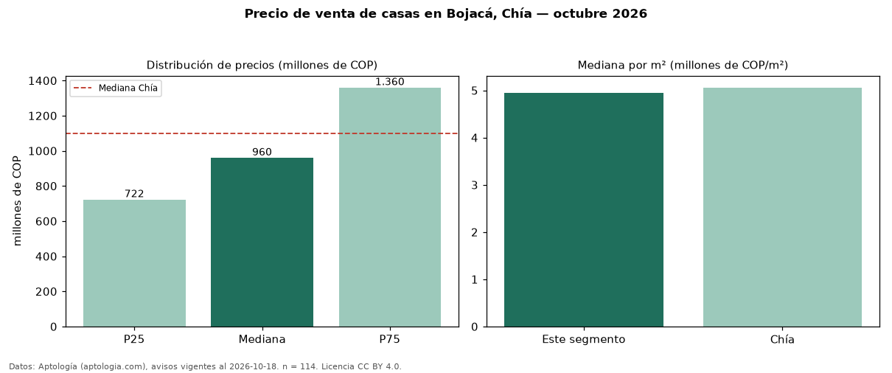

Precio de venta de casas en Bojacá, Chía — octubre 2026
En Bojacá, Chía, la mediana de precio de venta de casas es COP 960 millones, según 114 avisos vigentes. Eso es 13 % por debajo de la mediana de Chía para casas (COP 1,10 mil millones). Por metro cuadrado, la mediana es COP 4,94 millones/m² (n = 113 avisos con área), 2 % por debajo de Chía (COP 5,06 millones/m²). El área mediana anunciada es 175 m². El segmento con más oferta es el de 3 o más habitaciones (114 avisos, mediana COP 960 millones). La administración mediana declarada es COP 750.000 al mes (n = 91). Por precio mediano es el puesto 13 de 21 barrios de Chía con al menos 30 avisos de casas en venta (COP): en la franja media. La mitad central de los avisos va de COP 722 millones a COP 1,36 mil millones (razón 1,9), una dispersión moderada. Datos: Aptología (aptologia.com), CC BY 4.0 — https://www.aptologia.com/casas-en-venta/chia/bojaca. Archivos: PDF, CSV con las cifras y gráfica PNG.

| Avisos únicos | 114 |
|---|---|
| Percentil 25 | COP 722.475.000 |
| Mediana | COP 960.000.000 |
| Percentil 75 | COP 1.360.000.000 |
| Mediana por m² | COP 4.940.711 |
Fuente: avisos vigentes de portales inmobiliarios recopilados por Aptología, deduplicados (mínimo 30 avisos únicos por celda). Precios pedidos, no cerrados. Fecha: 2026-10-18.